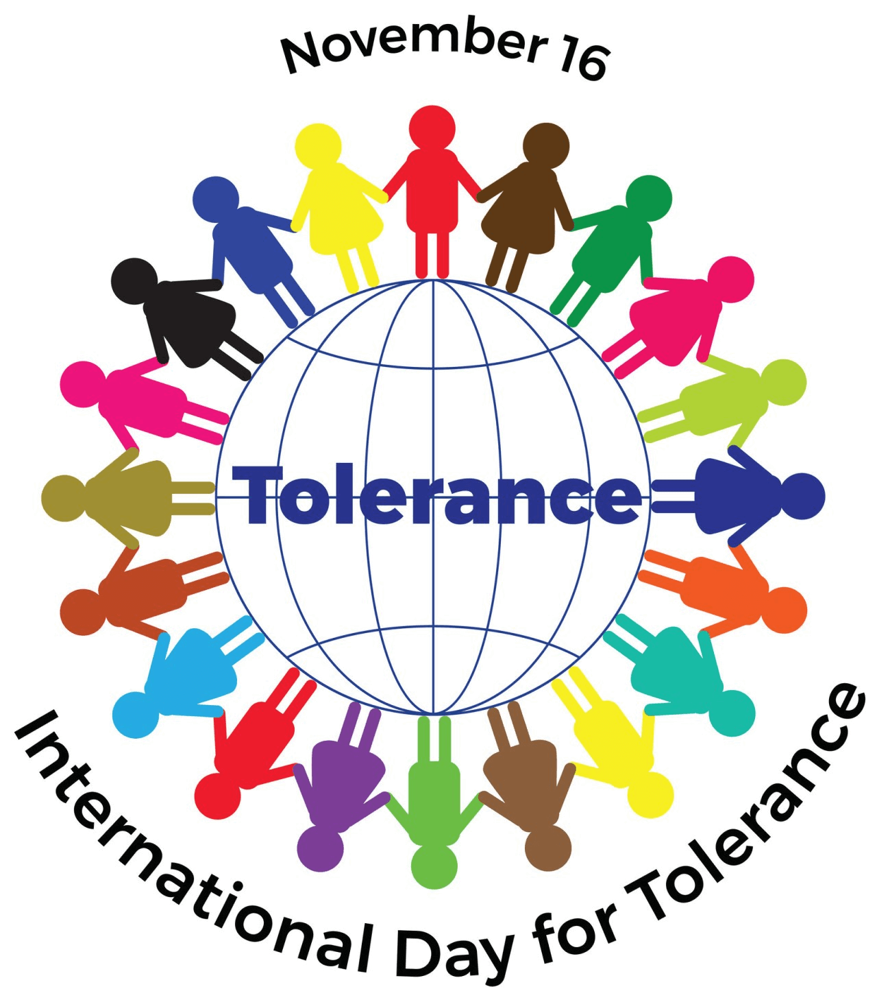

تجذب مبادرة "التسامح والتفاهم والتعايش: رسالة عمان للإسلام"، وتربط المزيد والمزيد من الأطراف التي تدعم فكرة التسامح الديني والتفاهم المتبادل والتعايش السلمي.
أدى التعاون مع شركائنا إلى إنشاء:
- مواد تعليمية.
- تنظيم محاضرات وورش عمل.
- عمل جولات سياحية دراسية.
- تنظيم برامج ثقافية.
- تنظيم مؤتمرات
- تبادل أكاديمي.
- حوار بين الأديان.
- مساهمات فنية.
- مبادرات عدة عبر وسائل التواصل الاجتماعي.
فوتو فويس بجميع أنحاء العالم في عمان:
في اليوم العالمي للتسامح لعام 2021، قامت وزارة الأوقاف والشؤون الدينية العمانية بالتعاون مع مركز الأمانة بتدعيم المشروع فوتو فويس بجميع أنحاء العالم ومعرض للصور يختتم المشروع في مدينة مسقط.
اجتمع أشخاص من ديانات مختلفة لعرض صورهم وتجاربهم. اقرأ المزيد عن ذلك في هذا التقرير باللغة الإنجليزية على موقع عمان أوبزرفر.المدرسة الصيفية للحوار بين الأديان كامبريدج، المملكة المتحدة:
لأكثر من 10 سنوات، يجمع برنامج كامبريدج للحوار بين الأديان بالتعاون مع وزارة الأوقاف والشؤون الدينية العمانية، مجموعة دولية من القادة الدينيين الناشئين من خلفيات إسلامية ومسيحية ويهودية. تتمثل فكرة البرنامج في الجمع بين قادة المستقبل الدينيين من الأديان الإبراهيمية لفترة مكثفة من الانغماس في لقاء بين الأديان والثقافات، لتوفير الموارد العملية لصنع السلام وجهود نوع فتيل الصراعات.
جولة حول الأديان من قبل منظمة الشباب "تعايش"، فرنسا:
بدأ خمسة طلاب فرنسيين تتراوح أعمارهم بين 19 و28 عامًا - مسلم وملحد ومسيحي ويهودي ومحايد - في يوليو 2013 بالسفر حول العالم، وزاروا أكثر من 50 دولة. كان هدفهم هو مقابلة الأشخاص الذين يشاركون في حوار بين الأديان والذين يشجعون التعايش، وإظهار أنه "من الممكن العيش معًا"، وتحديد المبادرات في جميع أنحاء العالم التي تعزز الحوار بين الأديان. "هذه الدولة العربية، التي يشكل الإسلام دينها الرسمي، تختلف عن جيرانها من خلال التسامح الديني والتعايش الذي تمكنت من ترسيخه، على الرغم من الضغوط المختلفة". وزارت تلك المجموعة سلطنة عمان بدعوة من وزارة الأوقاف والشؤون الدينية.
16 نوفمبر - يوم الأمم المتحدة العالمي للتسامح:
في السادس عشر من نوفمبر من كل عام، تستضيف وزارة الأوقاف والشؤون الدينية مؤتمرًا مع أعضاء شبكتها من أجل السلام من جميع أنحاء العالم الذين ينشطون في مجال التسامح الديني والتفاهم المتبادل والتعايش السلمي، من أجل تبادل الأفكار وتطوير رؤية مشتركة للمستقبل. وتعقد تلك المؤتمرات بشكل رئيسي في مدينة مسقط، أما في عام 2019، فقد تم عقد المؤتمر في العاصمة الإندونيسية جاكرتا، حيث تم إطلاق المبادرة العمانية "نحو قيم إنسانية موحدة".
المنظمة الغير حكومية بارازا:
بارازا; هي منظمة مستقلة غير ربحية، تأسست في عام 2017 في ألمانيا من قبل ذات الفريق المسؤول عن تصميم وتنظيم زإدارة معرض عمان الدولي للتسامح، بالتعاون مع خبراء دوليين ذوي صلة بمبادرة عمان للتسامح. تروج بارازا لفكر عالمي قائم على التسامح في جميع مجالات الثقافة والدين والتفاهم بين الأمم.
الكتاب مجاني ويمكن تنزيله من الإنترنت بصيغة بي دي إف. لتنزيل كتاب التلوين بلغتك المفضلة، يرجى النقر هنا على هذا الرابط المباشر ».
مثال آخر هو إطلاق برنامج "متحدون"، للمدارس. وهو برنامج للتدريب على المهارات الحياتية للشباب. ويستهدف البرنامج البراعم الصغيرة، من أجل تعزيز القيم الإيجابية للاندماج، والثقة بالنفس، والتفكير النقدي، والديمقراطية.
تعرف من هنا على المزيد عن مشروع "متحدون" (باللغة الإنجليزية) »
روابط متعلقة:
تفضلوا بزيارة معرض التسامح العالمي الافتراضي بلغتكم المفضلة